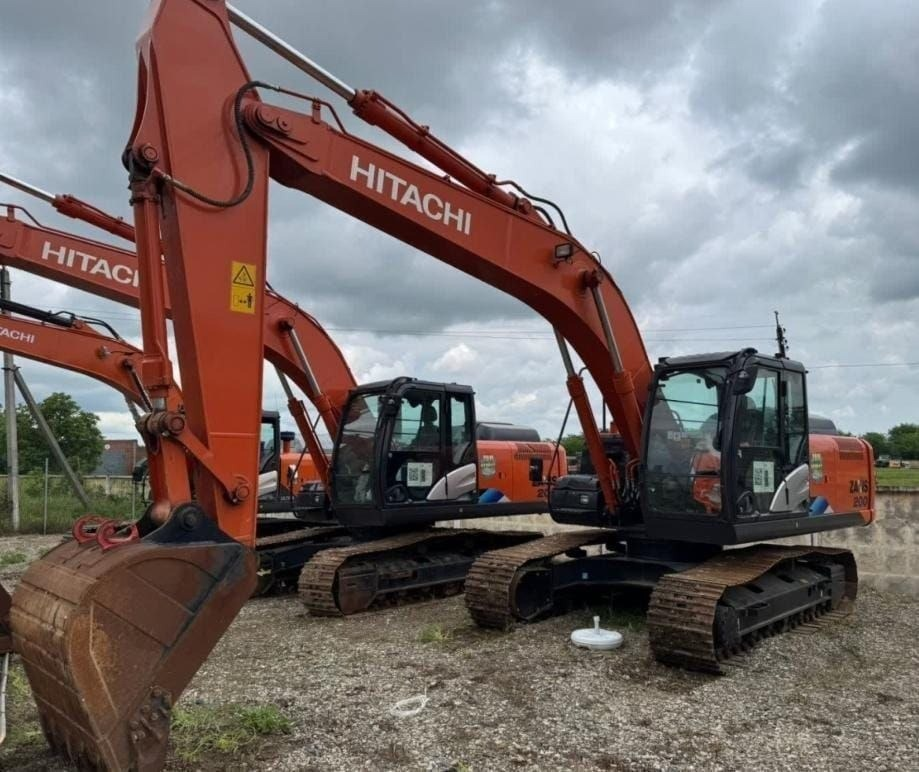

Хит аренды
Госномер 0616 MX 77
Гусеничный экскаватор
Hitachi ZX 200LC-5G
Тяжелый надежный экскаватор с ковшом 1,2 м³. Негабаритный, но перевозка по Москве осуществляется как габаритного груза без задержек.
Объем ковша1,2 м³
Глубина копания6 670 мм
Радиус копания9 920 мм
ЛогистикаКак габарит по МСК